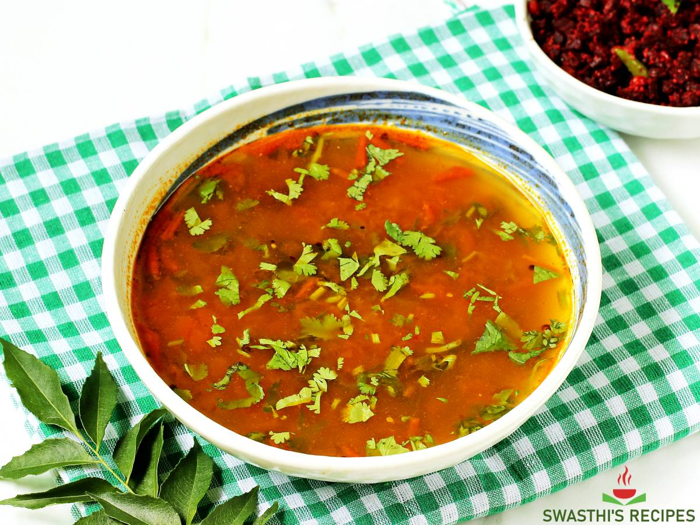

Rasam
⭐⭐⭐⭐⭐ 4.8 Rating | ⏱ 35 Minutes | 🍽 4 Servings
Category
Lunch/Dinner
Difficulty
Easy
Calories
310 kcal
Cooking Style
South Indian
📋 Ingredients
- 2 ripe tomatoes (chopped)
- 1 tbsp tamarind paste
- 1/4 cup cooked toor dal (mashed thin)
- 3 cups water
- 1/2 tsp turmeric
- 1 tsp black peppercorns
- 1 tsp cumin seeds
- 3 garlic cloves
- 1 dry red chilli (crushed coarsely)
- 1 tbsp ghee
- 1 tsp mustard seeds
- 1 sprig curry leaves
- pinch of hing
- fresh coriander leaves
- Salt to taste
🍳 Required Utensils
- Cast-iron tawa (with handle)
- rolling pin
- saucepan/sauce pot
- pestle mortar
- tongs
📖 Introduction
Pairing Tandoori Roti with South Indian Tomato-Lentil Rasam brings together North Indian open-flame charred flatbread with a comforting, tangy, spiced broth.
🔬 Principle
Relies on extracting water-soluble tartness from tamarind and tomatoes, spiked with coarse-ground black pepper and cumin (rasam powder), brought to a brief froth to preserve delicate essential oils.
👨🍳 Procedure
- Grind Spices & Simmer Broth
- Coarsely crush peppercorns, cumin, garlic, and red chilli in a mortar.
- Add this freshly ground mix and the thin cooked toor dal to the tomato pot with 1.5 cups water.
- Bring to a gentle froth over medium heat—do not boil rapidly.
- Turn off heat.
- Temper the Rasam
- Heat 1 tbsp ghee in a small pan.
- Pop mustard seeds, curry leaves, and hing.
- Pour immediately into the hot rasam, cover with a lid to trap aromatics, and top with chopped coriander.
⚠ Precautions
- High acidity from tamarind and tomatoes may trigger acid reflux in prone individuals
- Adjust chili and pepper levels to suit your spice threshold.
💡 Chef Tips
- Never boil rasam vigorously after adding the freshly crushed pepper-cumin spice mix and dal; let it come to a frothy head and turn off heat immediately to retain its light aroma.
- Use an un-coated iron pan so the moist roti dough adheres tightly when turned upside down directly over the open flame.
- Since rasam is thin, serve it in a wide bowl so you can easily tear off pieces of warm, buttered tandoori roti to soak up the broth.
🥗 Nutrition Facts
| Nutrient | Amount |
|---|---|
| Calories | 350 kcal |
| Protein | 10 g |
| Carbohydrates | 56 g |
| Fat | 10 g |
| Fiber | 7 g |
🍽 Serving Suggestions
- Serve rasam hot in a bowl alongside ghee-brushed tandoori rotis, potato roast (alu fry), or a dry vegetable stir-fry (poriyal).
- Excellent when paired with papadums, steamed rice, and a side of lemon pickle.
🌿 Health Benefits
- Rasam is renowned for digestive aid due to black pepper, cumin, tamarind, and garlic.
- Whole wheat rotis provide complex carbs and fiber.
✅ Result
A soothing thali combination offering crisp, smoky, warm rotis designed for dipping directly into a piping-hot, tangy, aromatic spice broth.
🎥 Watch Recipe Video
Learn the complete recipe by watching the step-by-step video.
▶ Watch on YouTube